| 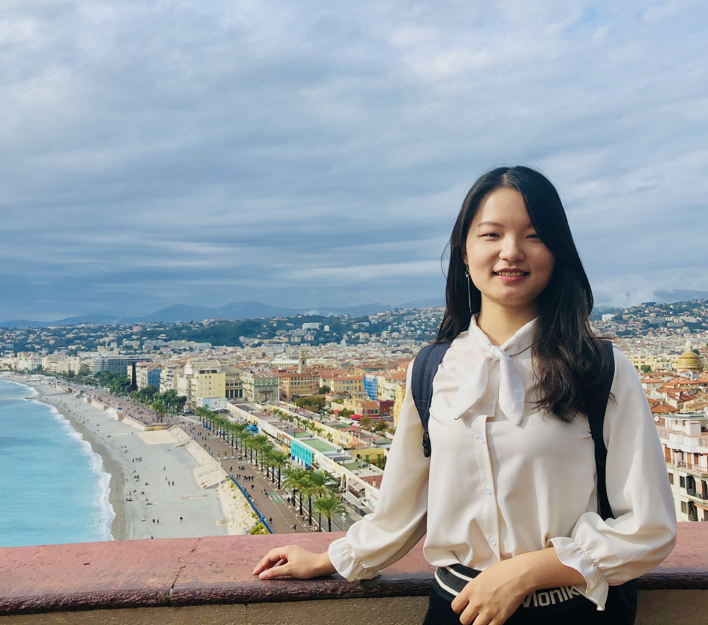 | Yaosi Hu (胡姚姒) |
About Me
I am currently a Post-Doctoral Fellow at the Hong Kong Polytechnic University, working with Prof. Chang Wen Chen. I received my Ph.D. degree from Wuhan University, China, supervised by Prof. Zhenzhong Chen. I have also served as a research intern at Microsoft Research Asia during 2021-2022 working on video generation.My current research interests include computer vision and image/video processing, especially focusing on generative models and video quality assessment.
Education
- Sep. 2017 - Jun. 2023 Ph.D. in School of Remote Sensing and Information Engineering, Wuhan University.
- Sep. 2013 - Jun. 2017 B.Eng. in School of Remote Sensing and Information Engineering, Wuhan University.
Publications
Conferences:
| 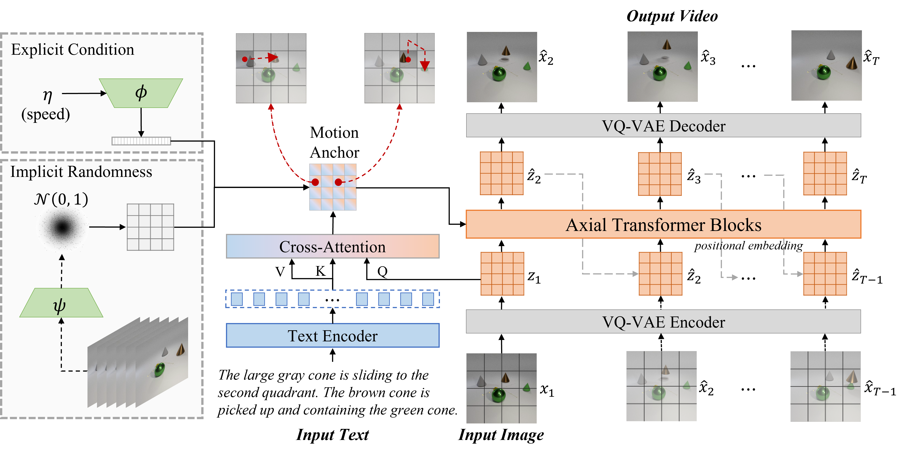 |
Make It Move: Controllable Image-to-Video Generation with Text Descriptions
@InProceedings{Hu_2022_CVPR,
author = {Hu, Yaosi and Luo, Chong and Chen, Zhenzhong},
title = {Make It Move: Controllable Image-to-Video Generation With Text Descriptions},
booktitle = {Proceedings of the IEEE/CVF Conference on Computer Vision and Pattern Recognition (CVPR)},
month = {June},
year = {2022},
pages = {18219-18228}
}
|
| 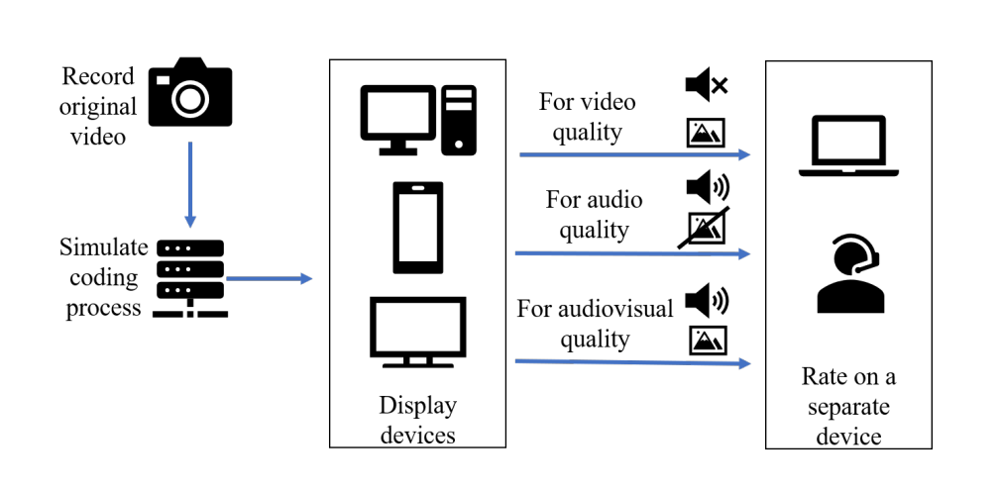 |
Subjective Quality Assessment of One-to-One Video-Telephony Service
@INPROCEEDINGS{9828647,
author={Liu, Mengying and Joskowicz, Jose and Sotelo, Rafael and Hu, Yaosi and Chen, Zhenzhong and Yang, Lei},
booktitle={2022 IEEE International Symposium on Broadband Multimedia Systems and Broadcasting (BMSB)},
title={Subjective Quality Assessment of One-to-One Video-Telephony Services},
year={2022},
volume={},
number={},
pages={1-6},
doi={10.1109/BMSB55706.2022.9828647}}
|
| 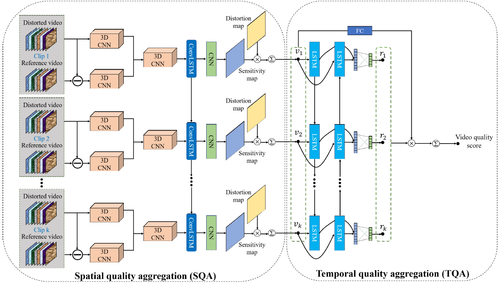 |
Video Quality Assessment based on Quality Aggregation Networks
@INPROCEEDINGS{Wu2022VCIP,
author={Wei Wu, Yingxue Zhang, Yaosi Hu, Zhenzhong Chen, Shan Liu},
booktitle={2022 International Conference on Visual Communications and Image Processing (VCIP)},
title={Video Quality Assessment based on Quality Aggregation Networks},
year={2022},
volume={},
number={},
pages={}
}
|
| 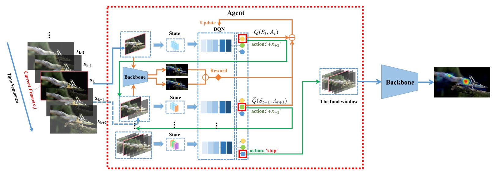 |
Learn to Look Around: Deep Reinforcement Learning Agent for Video Saliency Prediction
@INPROCEEDINGS{9675397,
author={Tao, Yiran and Hu, Yaosi and Chen, Zhenzhong},
booktitle={2021 International Conference on Visual Communications and Image Processing (VCIP)},
title={Learn to Look Around: Deep Reinforcement Learning Agent for Video Saliency Prediction},
year={2021},
volume={},
number={},
pages={1-5},
doi={10.1109/VCIP53242.2021.9675397}}
|
| 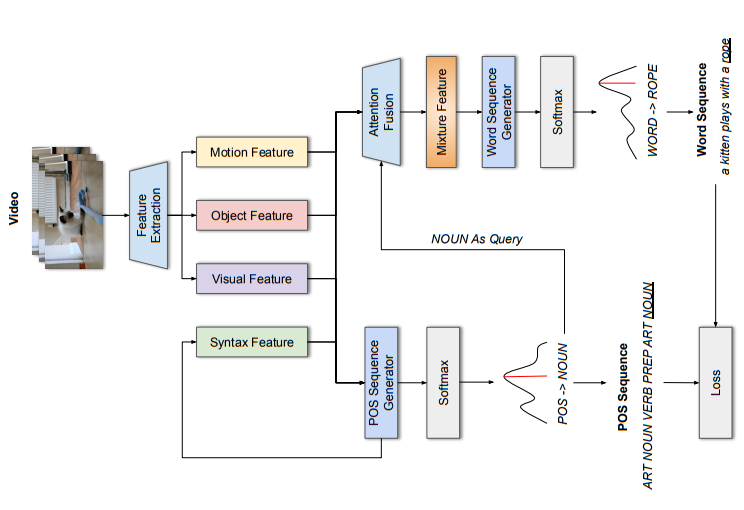 |
MAPS: Joint Multimodal Attention and POS Sequence Generation for Video Captioning
@INPROCEEDINGS{9675348,
author={Zou, Cong and Wang, Xuchen and Hu, Yaosi and Chen, Zhenzhong and Liu, Shan},
booktitle={2021 International Conference on Visual Communications and Image Processing (VCIP)},
title={MAPS: Joint Multimodal Attention and POS Sequence Generation for Video Captioning},
year={2021},
volume={},
number={},
pages={1-5},
doi={10.1109/VCIP53242.2021.9675348}}
|
| 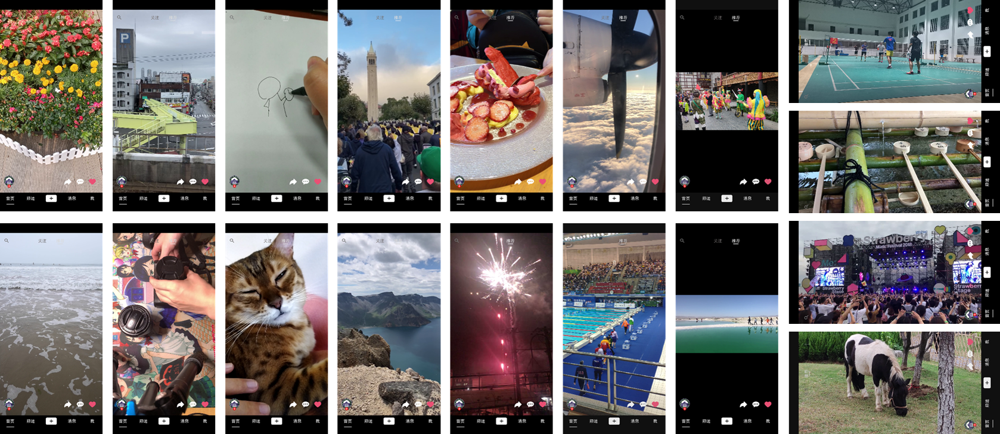 |
Subjective Study of Perceptual Quality for Micro-Video Applications
@INPROCEEDINGS{9175555,
author={Hu, Yaosi and Zhang, Yingxue and Liu, Zizheng and Chen, Zhenzhong and Liu, Shan},
booktitle={2020 IEEE Conference on Multimedia Information Processing and Retrieval (MIPR)},
title={Subjective Study of Perceptual Quality for Micro-Video Applications},
year={2020},
volume={},
number={},
pages={229-232},
doi={10.1109/MIPR49039.2020.00054}}
|
| 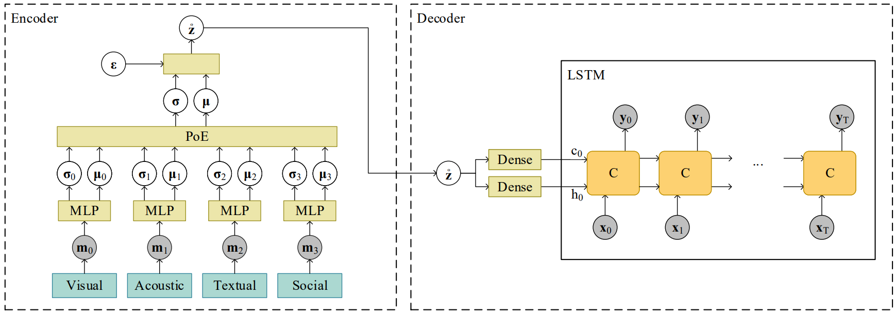 |
A Multimodal Variational Encoder-Decoder Framework for Micro-video Popularity Prediction
@inproceedings{10.1145/3366423.3380004,
author = {Xie, Jiayi and Zhu, Yaochen and Zhang, Zhibin and Peng, Jian and Yi, Jing and Hu, Yaosi and Liu, Hongyi and Chen, Zhenzhong},
title = {A Multimodal Variational Encoder-Decoder Framework for Micro-Video Popularity Prediction},
year = {2020},
isbn = {9781450370233},
publisher = {Association for Computing Machinery},
address = {New York, NY, USA},
doi = {10.1145/3366423.3380004},
booktitle = {Proceedings of The Web Conference 2020},
pages = {2542–2548},
numpages = {7},
location = {Taipei, Taiwan},
series = {WWW '20}
}
|
| 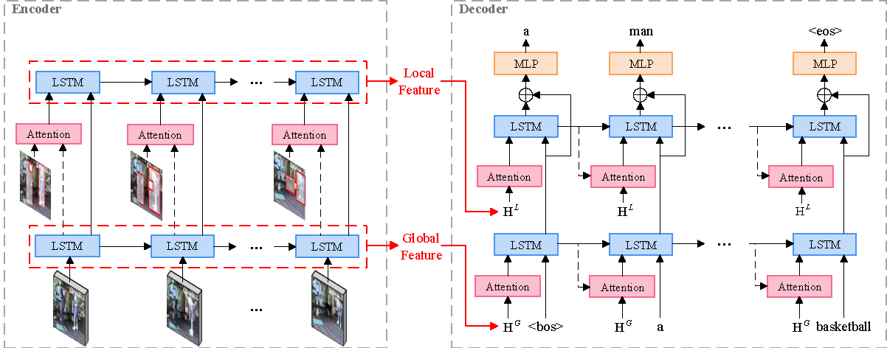 |
Hierarchical Global-Local Temporal Modeling for Video Captioning
@inproceedings{10.1145/3343031.3351072,
author = {Hu, Yaosi and Chen, Zhenzhong and Zha, Zheng-Jun and Wu, Feng},
title = {Hierarchical Global-Local Temporal Modeling for Video Captioning},
year = {2019},
isbn = {9781450368896},
publisher = {Association for Computing Machinery},
address = {New York, NY, USA},
doi = {10.1145/3343031.3351072},
booktitle = {Proceedings of the 27th ACM International Conference on Multimedia},
pages = {774–783},
numpages = {10},
location = {Nice, France},
series = {MM '19}
}
|
| 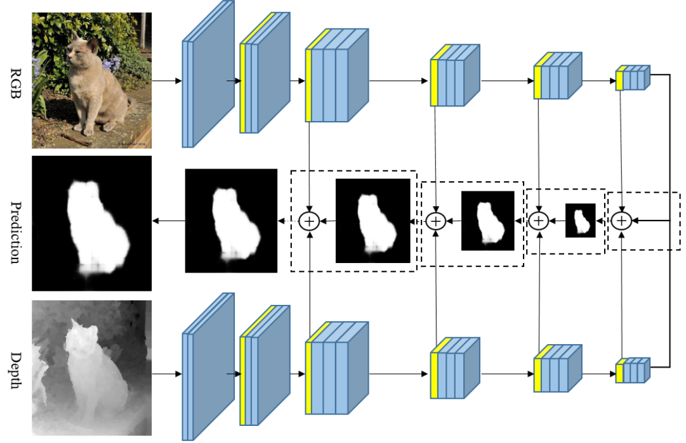 |
Two-Stream Refinement Network for RGB-D Saliency Detection
@INPROCEEDINGS{8803653,
author={Liu, Di and Hu, Yaosi and Zhang, Kao and Chen, Zhenzhong},
booktitle={2019 IEEE International Conference on Image Processing (ICIP)},
title={Two-Stream Refinement Network for RGB-D Saliency Detection},
year={2019},
volume={},
number={},
pages={3925-3929},
doi={10.1109/ICIP.2019.8803653}
}
|
| 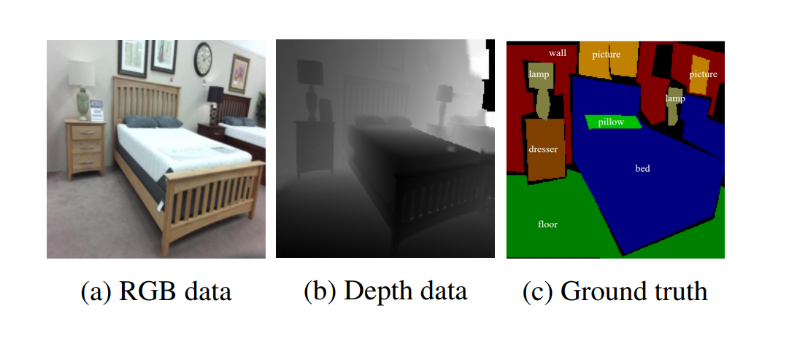 |
RGB-D Semantic Segmentation: A Review
@INPROCEEDINGS{8551554,
author={Hu, Yaosi and Chen, Zhenzhong and Lin, Weiyao},
booktitle={2018 IEEE International Conference on Multimedia & Expo Workshops (ICMEW)},
title={RGB-D Semantic Segmentation: A Review},
year={2018},
volume={},
number={},
pages={1-6},
doi={10.1109/ICMEW.2018.8551554}
}
|
Journals:
| 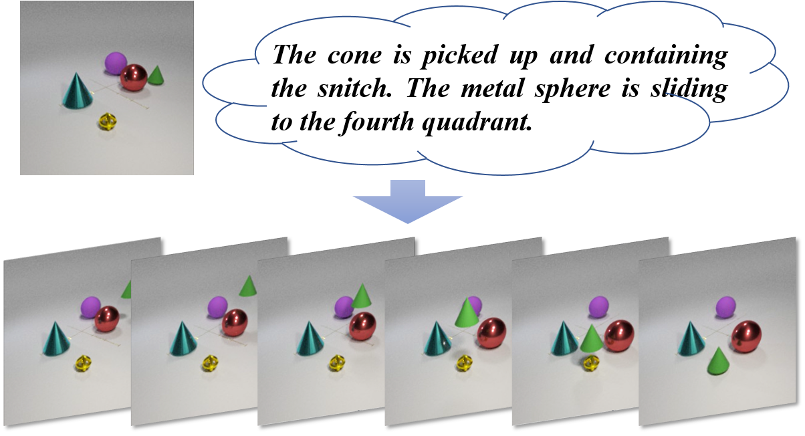 |
A Benchmark for Controllable Text-Image-to-Video Generation
@ARTICLE{10148799,
author={Hu, Yaosi and Luo, Chong and Chen, Zhenzhong},
journal={IEEE Transactions on Multimedia},
title={A Benchmark for Controllable Text-Image-to-Video Generation},
year={2023},
volume={},
number={},
pages={1-14},
doi={10.1109/TMM.2023.3284989}}
|
| 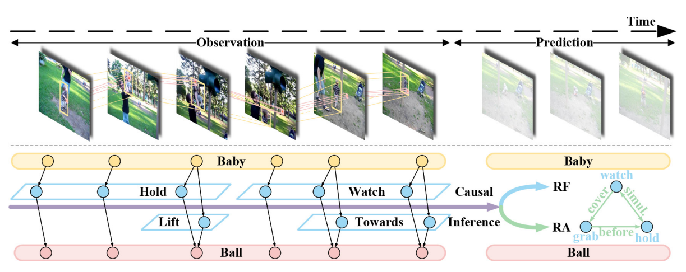 |
Multiple Visual Relationship Forecasting and Arrangement in Videos
@article{OUYANG2023126274,
title = {Multiple visual relationship forecasting and arrangement in videos},
journal = {Neurocomputing},
volume = {541},
pages = {126274},
year = {2023},
issn = {0925-2312},
doi = {https://doi.org/10.1016/j.neucom.2023.126274},
url = {https://www.sciencedirect.com/science/article/pii/S0925231223003971},
author = {Wanping Ouyang and Yaosi Hu and Yangjun Ou and Zhenzhong Chen},
}
|

|
Decomposing Style, Content, and Motion for Videos
@article{HU2022103686,
title = {Decomposing style, content, and motion for videos},
journal = {Journal of Visual Communication and Image Representation},
volume = {89},
pages = {103686},
year = {2022},
issn = {1047-3203},
doi = {https://doi.org/10.1016/j.jvcir.2022.103686},
url = {https://www.sciencedirect.com/science/article/pii/S1047320322002061},
author = {Yaosi Hu and Dacheng Yin and Yuwang Wang and Zhenzhong Chen and Chong Luo}
}
|
| 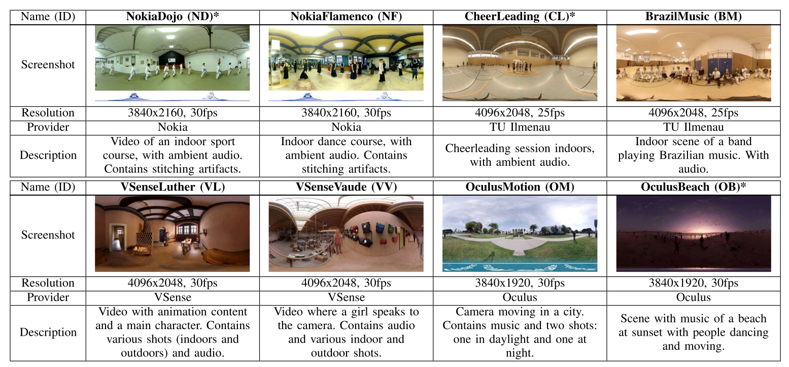 |
Subjective Evaluation of Visual Quality and Simulator Sickness of Short 360o Videos: ITU-T Rec. P.919
@ARTICLE{9474501,
author={Gutiérrez, Jesús and Pérez, Pablo and Orduna, Marta and Singla, Ashutosh and Cortés, Carlos and Mazumdar, Pramit and Viola, Irene and Brunnström, Kjell and Battisti, Federica and Cieplińska, Natalia and Juszka, Dawid and Janowski, Lucjan and Leszczuk, Mikołaj and Adeyemi-Ejeye, Anthony and Hu, Yaosi and Chen, Zhenzhong and Wallendael, Glenn Van and Lambert, Peter and Díaz, César and Hedlund, John and Hamsis, Omar and Fremerey, Stephan and Hofmeyer, Frank and Raake, Alexander and César, Pablo and Carli, Marco and García, Narciso},
journal={IEEE Transactions on Multimedia},
title={Subjective Evaluation of Visual Quality and Simulator Sickness of Short 360$^\circ$ Videos: ITU-T Rec. P.919},
year={2022},
volume={24},
number={},
pages={3087-3100},
doi={10.1109/TMM.2021.3093717}}
|
| 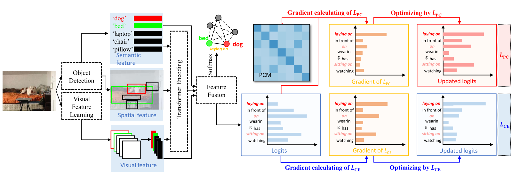 |
Predicate Correlation Learning for Scene Graph Generation
@ARTICLE{9796007,
author={Tao, Leitian and Mi, Li and Li, Nannan and Cheng, Xianhang and Hu, Yaosi and Chen, Zhenzhong},
journal={IEEE Transactions on Image Processing},
title={Predicate Correlation Learning for Scene Graph Generation},
year={2022},
volume={31},
number={},
pages={4173-4185},
doi={10.1109/TIP.2022.3181511}}
|
| 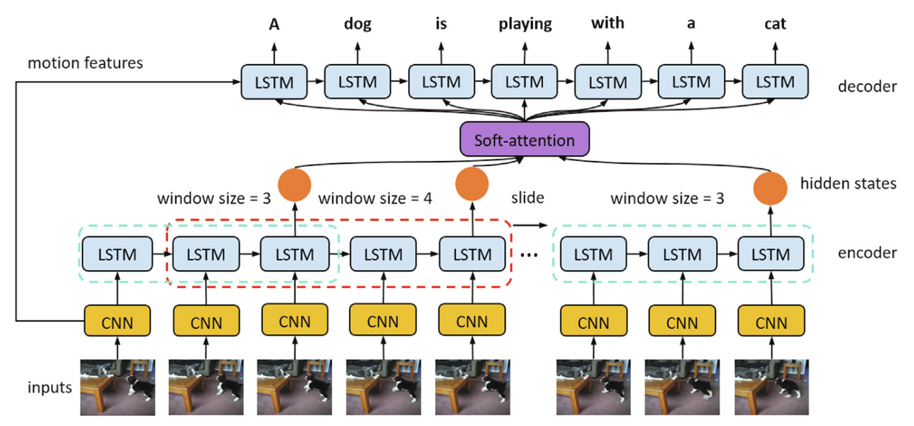 |
Exploiting the Local Temporal Information for Video Captioning
@article{WEI2020102751,
title = {Exploiting the local temporal information for video captioning},
journal = {Journal of Visual Communication and Image Representation},
volume = {67},
pages = {102751},
year = {2020},
issn = {1047-3203},
doi = {https://doi.org/10.1016/j.jvcir.2020.102751},
author = {Ran Wei and Li Mi and Yaosi Hu and Zhenzhong Chen}
}
|
Arxiv:
| 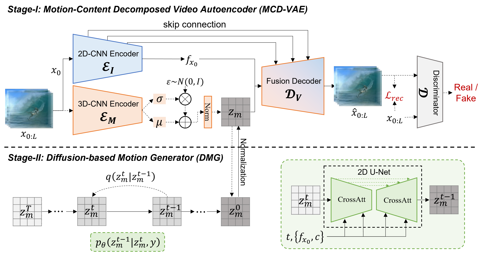 |
LaMD: Latent Motion Diffusion for Video Generation
@misc{hu2023lamd,
title={LaMD: Latent Motion Diffusion for Video Generation},
author={Yaosi Hu and Zhenzhong Chen and Chong Luo},
year={2023},
eprint={2304.11603},
archivePrefix={arXiv},
primaryClass={cs.CV}
}
|
| 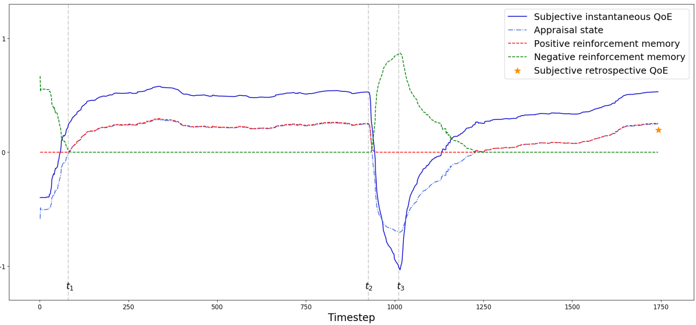 |
Learning Human Cognitive Appraisal Through Reinforcement Memory Unit
@misc{2208.03473,
doi = {10.48550/ARXIV.2208.03473},
author = {Hu, Yaosi and Chen, Zhenzhong},
title = {Learning Human Cognitive Appraisal Through Reinforcement Memory Unit},
publisher = {arXiv},
year = {2022}
}
|
Standard Proposals
- ITU-T P.919. Subjective test methodologies for 360º video on head-mounted displays, 2020.10. Editors: Pablo Pérez, Jesús Gutiérrez, Ashutosh Singla, Irene Viola, Federica Battisti, Dawid Juszka, Marta Orduna, Zhenzhong Chen, Yaosi Hu.
- Zhenzhong Chen, Yaosi Hu, Yingxue Zhang, Yi Han, Xuan Yan, Shan Liu, Xiaozhong Xu. Subjective Quality Assessment Database for PGC Video Content Towards Mobile Video Applications. AVS M5083, 2019.12, Shenzhen, CN.
- Yingxue Zhang, Yaosi Hu, Zhenzhong Chen, Xiaozhong Xu, Shan Liu, Xuan Yan, Yi Han. Subjective Test Methodology for PGC Video Content Towards Mobile Video Applications. AVS M5082, 2019.12, Shenzhen, CN.
- Zizheng Liu, Ruigang Yao, Wei Wu, Yingxue Zhang, Yaosi Hu, Zhenzhong Chen, Xiaozhong Xu, Shan Liu, Xuan Yan, Yi Han. No-reference Video Quality Aseessment Model for PGC Video Content Towards Mobile Video Applications. AVS M5084, 2019.12, Shenzhen, CN.
Services
- 2022-: Reviewer - IEEE Transactions on Image Processing (TIP)
- 2022-: Reviewer - IEEE Transactions on Multimedia (TMM)
- 2022: Reviewer - IEEE International Conference on Multimedia and Expo (ICME)
- 2021: Reviewer - AAAI Conference on Artificial Intelligence (AAAI)
- 2020: Program Coordinator - IEEE 3rd International Conference on Multimedia Information Processing and Retrieval (MIPR)
- 2019: Program Coordinator and Local Arrangement - Video Quality Experts Group Meeting